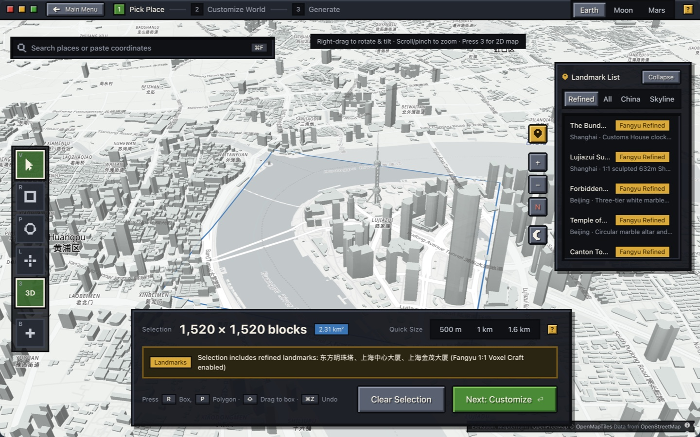
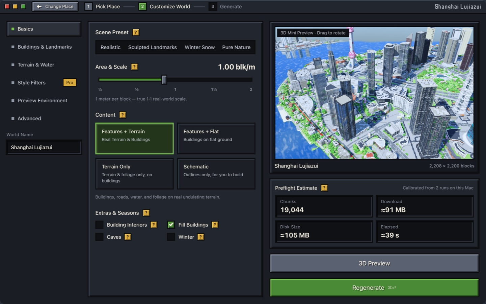
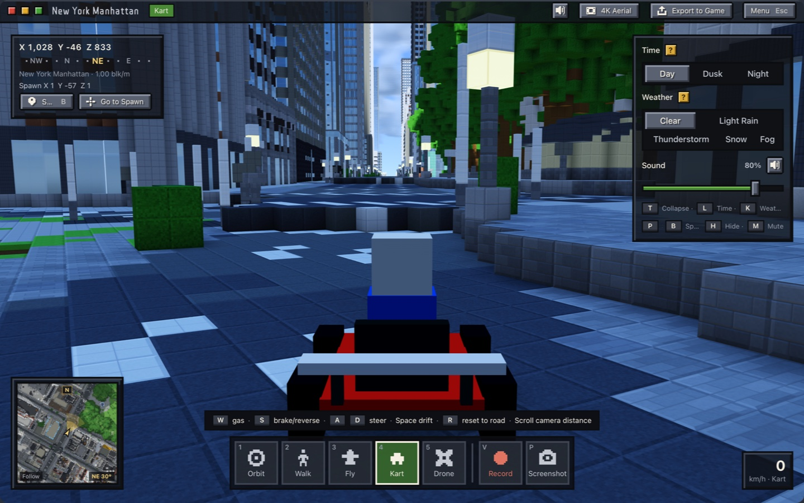
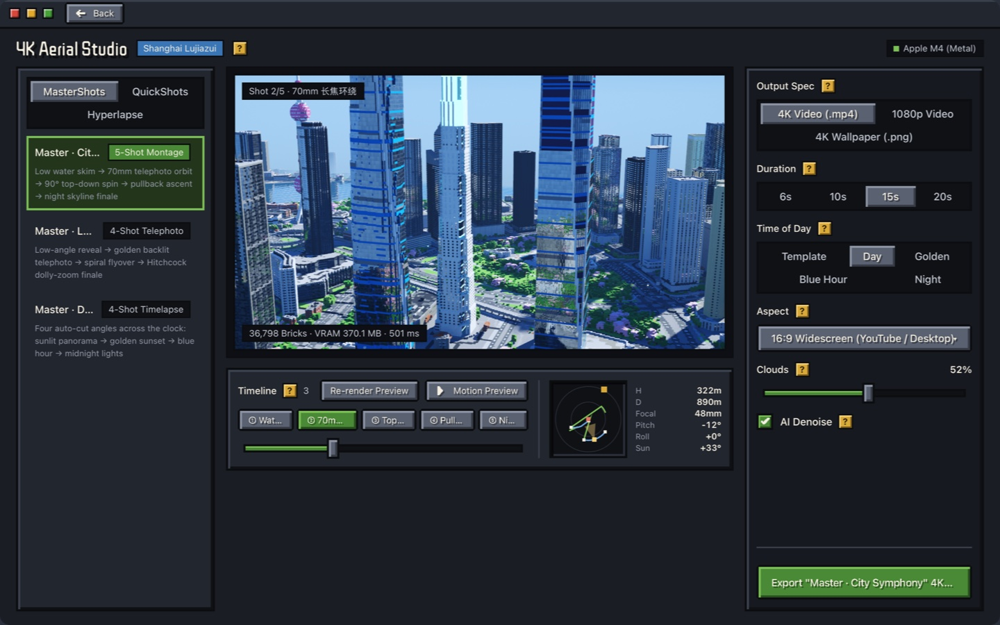
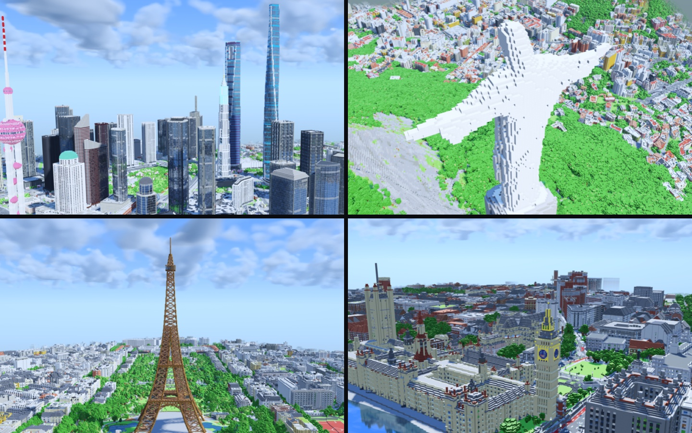
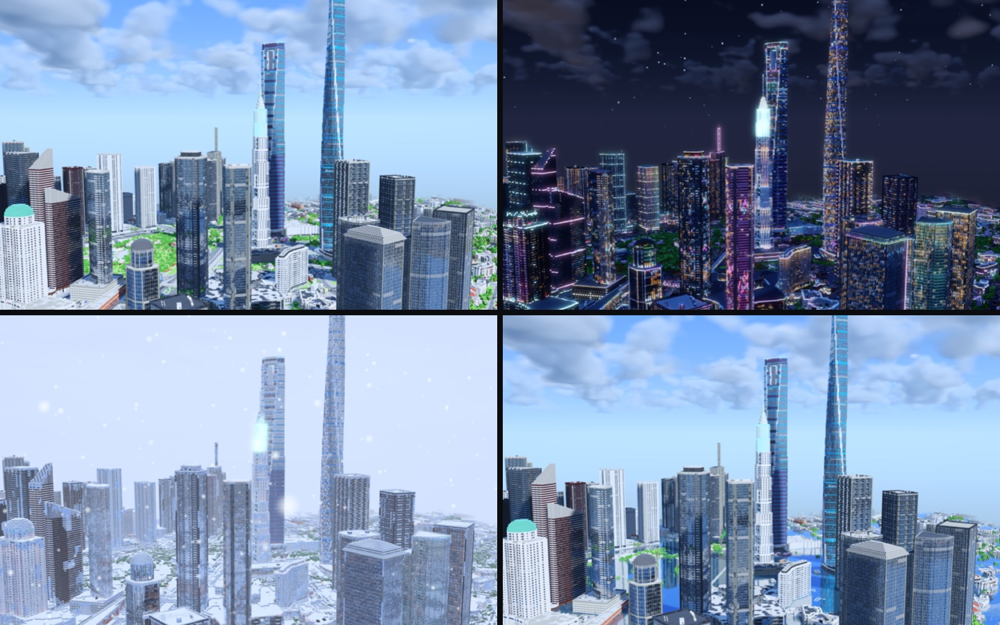
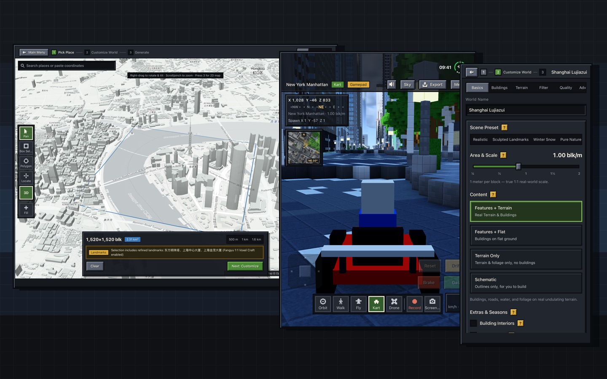
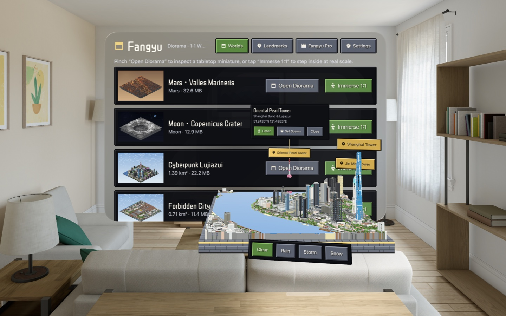

1:1 Landmark Sculpting
1:1 Landmark Sculpting
Real Skylines & Handcrafted Landmarks
Automatically replaces coarse footprints with WGS-84 aligned 1:1 sculpted voxel landmarks, with extended height datapacks so supertalls keep their full real-world stature.
Turn real places on Earth, the Moon, and Mars into block worlds you can step inside.
Named after the classical Chinese word for the mapped Earth, Fangyu turns any map selection into a true-scale 1:1 voxel world with real terrain, buildings, and handcrafted landmarks. Roam live in native Metal 3D, film 4K ray-traced aerials, place tabletop dioramas on Apple Vision Pro, or export to Minecraft, 3D printers, and Blender.
Local-first · No accounts, no tracking: All worlds and renders stay on your device. Independent app — not an official Minecraft product; not approved by or associated with Mojang or Microsoft.
Every build lands cleanly in your local Fangyu World Library—no terminal commands or upfront folder setup. Explore in 3D, shoot 4K aerials, and export to any device whenever you're ready.

01Search places, paste coordinates, or jump to curated global landmarks across Earth, Moon, and Mars. Draw rectangles or custom polygons with instant preflight estimates.

02Toggle interiors, Overture footprints, open LiDAR roofs, 1:1 landmark sculpting, Sentinel-2 satellite recoloring, or one-click Cyber, Apocalyptic, Ice, and Sunken City filters.

03Explore live in native Metal with Orbit, Walk, Fly, Kart, and Drone modes, dynamic weather and synthesized audio—or render 4K ray-traced aerials in CineStudio.
Drop straight into Minecraft Java saves, export Distant Horizons + Iris shader modpacks, AirDrop Bedrock .mcworld to iPhone/iPad, or slice watertight .stl models.
Combining OpenStreetMap, Overture Maps, public airborne LiDAR, Sentinel-2 cloudless imagery, and NASA planetary elevation into crisp voxel worlds.
1:1 Landmark Sculpting
Automatically replaces coarse footprints with WGS-84 aligned 1:1 sculpted voxel landmarks, with extended height datapacks so supertalls keep their full real-world stature.
 Style Filters · Night Rain
Style Filters · Night Rain
Restyle entire districts into Cyber Neon, Post-Apocalyptic, Frozen Apocalypse, or Sunken City while preserving sculpted landmarks—complete with wet street reflections and live weather audio.
 Moon & Mars · Spatial Diorama
Moon & Mars · Spatial Diorama
Explore craters and canyons built from real NASA LOLA/MOLA elevation and USGS basemaps, or inspect any world as an interactive gravity-aligned diorama on Apple Vision Pro.
Step directly into your 1:1 world without launching an external game. Switch between Orbit, Walk, Fly, Kart, and Drone with hardware game controller support, synthesized spatial soundscapes, and 60 fps live MP4 capture.

Two-level brickmap GPU path tracer with À-Trous denoising. Includes MasterShots, QuickShots (Dronie, Rocket, Helix, Dolly Zoom, FPV), and Sunset Hyperlapse templates exporting 16:9 & 9:16 4K video or PNG stills.

16 Fangyu handcrafted voxel landmarks plus built-in world monuments, paired with coherent surface patching, HD building facades, open airborne LiDAR roof/canopy geometry, and in-game landmark advancements.

Samples Sentinel-2 cloudless imagery in perceptual Oklab color space to match real rooftops and facades—or instantly transform whole neighborhoods with 4 dramatic architectural style filters.
Missing a new campus building, hometown courtyard, road, or canal on the map? Sketch patches directly before generation, or stitch multiple selections into one continuous world by exact coordinates.
Includes Fangyu's original architectural PBR textures plus three CC0 packs (Promo Brick, Urban 64x PBR, Heritage 32x), or load any Java Edition .zip resource pack with LabPBR normals and specular maps.
Unified under Bundle ID com.entropysniper.fangyu with Apple Universal Purchase and Family Sharing across Mac, iPhone, iPad, and Apple Vision Pro.
saves import
.mcworld packages or share via Files
No need to re-download map data: export any world in your library to games, shader modpacks, 3D printers, or VFX pipelines anytime.
Works with Official Launcher, Prism, Modrinth, HMCL & PCL; preserves landmarks, extended height, and HD facades.
Embeds your world + pre-baked Distant Horizons LODs with Sodium, Iris, and shaders for instant 256-chunk skylines.
One folder containing the shader modpack, 7 ray-traced 4K stills across lighting phases, guide, and optional sunset clip.
For iPhone/iPad App Store Minecraft, Mac Education, and Windows Bedrock; AirDrop or double-click to import.
Standard Sponge Schematic v2 blueprint ready to paste into servers or worlds with WorldEdit (//schem load), Axiom, or Litematica.
Auto-capped watertight manifold mesh on a solid 160mm base (mm units) ready for Bambu Studio, PrusaSlicer, or Cura.
Greedy-meshed and grouped by material with PBR colors and roughness—import effortlessly into Blender, C4D, or UE5.
Exports a local Hytale world directory containing client_metadata.json and chunk data.
All Pro plans unlock the exact same features via Apple StoreKit 2, with Universal Purchase across Mac, iPhone, iPad, and Vision Pro plus Family Sharing.
Auto-renewing monthly subscription. Cancel anytime in App Store settings.
Save 40%+ vs monthly · Cancel anytime
One-time non-consumable purchase. Permanent Pro access with no renewal.
Subscription & Purchase Terms: Reference prices shown for US and China Mainland storefronts; actual pricing matches your local App Store. Fangyu Pro Monthly and Yearly are auto-renewing subscriptions charged to your Apple Account upon confirmation. Subscriptions renew automatically unless canceled at least 24 hours before the end of the current period. Manage or cancel anytime in App Store Subscription Settings. Lifetime is a one-time permanent purchase. See Terms of Use and Privacy Policy.
Complete, transparent multilingual documentation for users and Apple App Review covering privacy practices, technical support, subscription terms, and third-party notices.
Aligned 100% with PrivacyInfo.xcprivacy: zero tracking, no accounts, local-first storage, transparent list of public map/elevation endpoints, and macOS Security-Scoped Bookmarks.
Restore purchases across Apple devices, manage subscriptions, import saves into Java & Bedrock Editions, or contact support directly at entropysniper@gmail.com.
Apple Standard EULA, auto-renewal disclosures, Mojang/Microsoft non-affiliation notice, Arnis Apache-2.0 NOTICE, OpenStreetMap ODbL & NASA/USGS data credits, and SIL OFL 1.1 fonts.
View Terms & Credits →